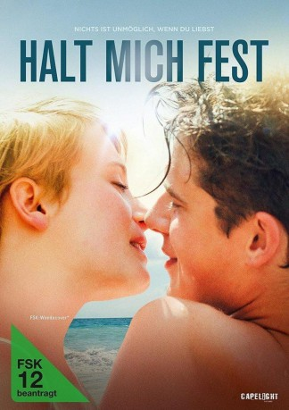

gesehen am 31.07.2017
gesehen am 31.07.2017Alternativ: One-Two-Three Now! (Englischer Titel) gesehen am 31.07.2017
 
 IMDB-Wertung: 6.2 / 10
IMDB-Wertung: 6.2 / 10  Metascore:
Metascore: 
Es ist der Beginn einer wunderbaren Liebesgeschichte: Als Jeppe der attraktiven, geheimnisvollen Cecilie zum ersten Mal begegnet, ist es sofort um ihn geschehen. Auch Cecilie verliebt sich Hals über Kopf in ihren smarten Mitschüler und für die beiden steht für einen Augenblick die Welt still. „Wer mit geschlossenen Augen den Ball in den Korb wirft, dessen Wunsch wird in Erfüllung gehen“, verspricht Basketball-Talent Jeppe seiner neuen Freundin nach ihrem ersten Date. Sein Wunsch: für immer mit ihr zusammen zu sein! Doch ein dunkler Schatten legt sich schon bald über das junge Glück, denn Cecilie hat ein Geheimnis, das ihre Beziehung auf eine harte Probe stellen wird…
Jahr: 2016
Dauer: 114 Minuten
FSK: 12
Land: Dänemark Studio: Alive Vertrieb und MarketingTonspuren:
Untertitel: Deutsch,
Auflösung: 1080p (1920x808) Größe: 4792 MB
Regisseur: Barbara Topsøe-Rothenborg
Drehbuch: Thorvald Lervad
Soundtrack:
Darsteller:
 Jens Jørn Spottag als Søren
Jens Jørn Spottag als SørenDatei: X:\2016(G-M)\Halt mich fest (2016, FSK12, 1920x808).mkv seit 18.07.2017
Festplatte: HD 2016(A-Z)
 Es gibt insgesamt 164 Filme in der Gruppe '2016(G-M)'
Es gibt insgesamt 164 Filme in der Gruppe '2016(G-M)'